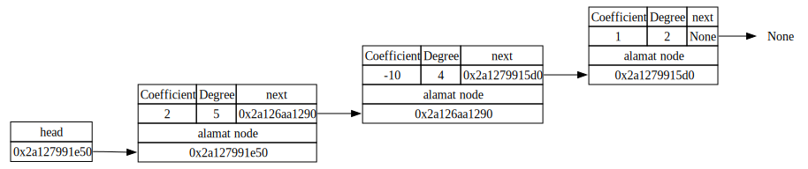
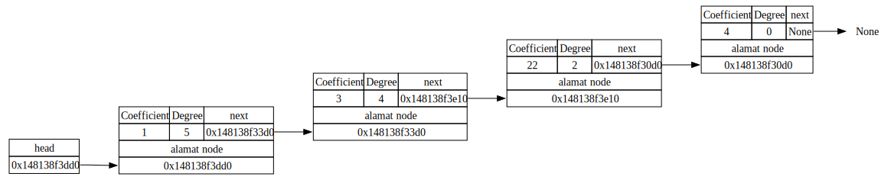
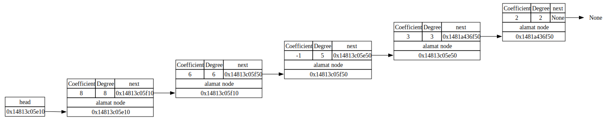
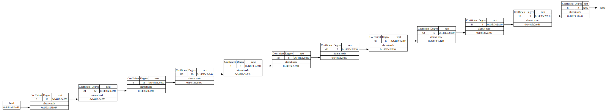

polinomial1 = SLLPolynomial()
polinomial1.insert_node(7,5)
polinomial1.insert_node(-10,4)
polinomial1.insert_node(3,2)
polinomial1.insert_node(-2,2)Tugas 1 Praktikum Struktur Data: Array, Linked List, OOP
Assignment 1: Array, Linked List, OOP
Tugas Individu, Take Home
Kembali ke Struktur Data
Tugas ini diberikan pada hari dan tanggal: Rabu, 1 Oktober 2025
Petunjuk umum
Kerjakan secara individu.
Kerjakan tugas ini menggunakan bahasa pemrograman Python dengan file format berupa interactive Python notebook (yaitu file berbentuk .ipynb BUKAN .py), yang bisa dibuat misalnya menggunakan Jupyter Notebook atau Google Colaboratory.
Harap sertakan penjelasan untuk setiap variabel yang digunakan dan setiap proses secara singkat di sebelah (atas/bawah/kanan) barisnya (dengan comment,
#). Selain itu, sertakan juga penjelasan kode (yang bisa mencakupi idenya apa, bagaimana cara eksekusinya, atau tentang algoritma yang digunakan) pada cell di sebelah (atas/bawah) kode.Format nama file untuk Tugas 1 ini adalah:
Kelas SIAK_Tugas1PrakStrukdat_Nama Lengkap_NPM.ipynb
Contoh penamaan yang benar:
Kelas C_Tugas1PrakStrukdat_Haikal Fikri Rabani_2206823713.ipynb
Pengumpulan Tugas 1 dilakukan ke Google Forms berikut ini:
Apabila ada yang ingin direvisi setelah pengumpulan, lakukan pengumpulan ulang di Google Forms yang sama, tambahkan keterangan bahwa ada revisi, dan tambahkan kata “revisi” pada bagian akhir nama file, contohnya menjadi
Kelas C_Tugas1PrakStrukdat_Haikal Fikri Rabani_2206823713_revisi.ipynb
Kelas C_Tugas1PrakStrukdat_Haikal Fikri Rabani_2206823713_revisi2.ipynb
Kelas C_Tugas1PrakStrukdat_Haikal Fikri Rabani_2206823713_revisi3.ipynb
(Revisi boleh dilakukan berkali-kali.)
Dengan durasi pengerjaan sekitar 12 Hari, tenggat waktu (deadline) pengumpulan Tugas 1 ini (termasuk revisi) adalah Minggu, 12 Oktober 2025, 23.59 WIB.
Sesuai standar Universitas Indonesia, plagiarisme dilarang keras dan bisa menyebabkan nilai tugas praktikum menjadi nol untuk semua pihak yang terlibat, tanpa peringatan apapun. Namun, Anda boleh langsung menggunakan kode yang ada di modul praktikum.
Kriteria Plagiarisme:
- Mengirimkan proyek submission milik mahasiswa lain.
- Menyalin sebagian besar submission dari proyek mahasiswa lain.
- Memiliki kesamaan substansial (>70%) dengan sumber lain tanpa atribusi yang layak.
Konsekuensi: Kami memiliki hak mutlak untuk mengenakan sanksi kepada peserta plagiat.
- Tim Asisten berhak melapor ke dosen pengampu mata kuliah.
- Atas izin dosen, Tim Asisten berhak memberikan matriks penilaian 0 (nol), tanpa terkecuali.
Module atau package Python yang boleh digunakan (di-import) untuk Tugas 1 ini hanyalah numpy dan graphviz. Apabila Anda berniat ingin menggunakan module lain, harap konfirmasikan ke narahubung terlebih dahulu (bisa saja diperbolehkan).
Narahubung untuk Tugas 1 Praktikum Struktur Data adalah:
Dimas Prasetya Utama (ID LINE: dimas.p.u)
Pandu Adjie Sukarno (ID LINE: pandu.adj)
Silakan hubungi narahubung di atas apabila ada yang ingin ditanyakan atau dikonfirmasikan.
Soal
Tugas ini terdiri dari satu soal besar yang terbagi menjadi lima nomor.
Suatu polinomial dalam satu variabel memiliki bentuk
\[a_nx^n+a_{n-1}x^{n-1}+...+a_2x^2+a_1x+a_0\]
di mana bagian \(a_ix^i\) disebut sebagai term (suku). Setiap term memiliki dua komponen, yaitu \(a_i\) yang merupakan koefisien dari suatu term dan \(i\) pada \(x^i\) yang merupakan derajat dari suatu term untuk \(i=0,1,...,n\).
Kita dapat merepresentasikan suatu polinomial dengan menggunakan singly linked list di mana satu term pada polinomial dapat direpresentasikan sebagai satu node pada linked list. Sehingga node pada linked list polinomial akan memiliki tiga komponen, yaitu koefisien dan derajat (yang merupakan komponen data) serta next (yang merupakan pointer).
No 1
- [25] Buatlah
class NodePolynomialyaitu class untuk menyimpan ketiga komponen di atas dalam suatu node. Kemudian buat jugaclass SLLPolynomial(dapat berupa child class dariclass SLListyang pernah dipelajari ataupun suatu class tersendiri) dengan satu pointer utamaheaddan satu operasi memasukkan node, yaituinsert_node. Ketentuan memasukkan node pada linked list polinomial adalah sebagai berikut:
Nilai koefisien pada node baru tidak boleh nol (Pada polinomial seharusnya bisa saja memiliki koefisien yang nol, namun pada umumnya term dengan koefisien nol tidak ditampilkan sehingga disini juga tidak usah dimasukkan sebagai node),
Node yang ditunjuk
headharus node dengan nilai derajat paling besar,Linked list harus terurut mulai dari derajat terbesar hingga terkecil,
Jika memasukkan node dengan derajat yang sudah ada pada linked list, maka nilai koefisien pada node baru akan dijumlahkan dengan nilai koefisien node yang sudah ada.
Kemudian representasikan polinomial berikut dalam bentuk linked list
\[Q_1(x) = 7x^8 - 12x^6 + 3x^5 - 3x^3 - 2x +5\]
Contoh:
polinomial1.print_all()head -> koefisien : 2, derajat : 5 -> koefisien : -10, derajat : 4 -> koefisien : 1, derajat : 2 -> Nonepolinomial1.insert_node(-5,5)
polinomial1.print_all()head -> koefisien : -3, derajat : 5 -> koefisien : -10, derajat : 4 -> koefisien : 1, derajat : 2 -> Nonepolinomial1.print_all()head -> koefisien : 2, derajat : 5 -> koefisien : -10, derajat : 4 -> koefisien : 1, derajat : 2 -> Nonepolinomial1.get_digraph()
No 2
Hasil polinomial pada contoh di atas adalah \[P_1(x)=2x^5 - 10x^4 + x^2\]
[15] Diberikan suatu array \(A=[a_0, a_1, ..., a_n]\) di mana elemen \(a_i\) merupakan nilai koefisien dari suatu polinomial pada term berderajat \(i\). Buatlah fungsi
to_linked_listyang mengubah array \(A\) menjadi suatu linked list polinomial. Tentukan Big-O dari algoritma yang telah anda buat dan berikan penjelasan atas jawaban anda (secara deskriptif saja).Kemudian tentukan array dari polinomial berikut dan ubah menjadi linked list polinomial menggunakan fungsi
to_linked_listyang telah anda buat\[Q_2(x) = 9x^{12} + 12x^8 -5x^6 - 15x^3 + 4x^2 - 3\]
Contoh:
A = np.array([0, 0, 2, 3, 0, -1, 6, 0, 8])
polinomial2 = to_linked_list(A)
polinomial2.print_all()head -> koefisien : 8, derajat : 8 -> koefisien : 6, derajat : 6 -> koefisien : -1, derajat : 5 -> koefisien : 3, derajat : 3 -> koefisien : 2, derajat : 2 -> NoneNo 3
- [15] Buat method
hapusyang berfungsi menghapus node yang diinginkan berdasarkan input yang diberikan. Method ini harus dapat menghapus node berdasarkan index, koefisien, ataupun derajat. Sebagai contoh:
Diberikan \[P_2(x) = 10x^4 + 7x^6 + 5x^5 + 10x^3 + 2\]
Jika ingin dihapus term dengan derajat 5, maka polinomial akan menjadi \(10x^4 + 7x^6 + 10x^3 + 2\)
Jika ingin dihapus term dengan koefisien 10, maka polinomial akan menjadi \(7x^6 + 5x^5 + 2\)
Jika ingin dihapus index ke 0, maka polinomial akan menjadi \(10x^4 + 5x^5 + 10x^3 + 2\)
Contoh:
polinomial3 = SLLPolynomial()
polinomial3.arr([2, 0, 0, 10, 10, 5, 7]) # method ini tidak perlu dibuat
polinomial3.print_all()head -> koefisien : 7, derajat : 6 -> koefisien : 5, derajat : 5 -> koefisien : 10, derajat : 4 -> koefisien : 10, derajat : 3 -> koefisien : 2, derajat : 0 -> Nonepolinomial3.hapus('derajat', 5)
polinomial3.print_all()head -> koefisien : 7, derajat : 6 -> koefisien : 10, derajat : 4 -> koefisien : 10, derajat : 3 -> koefisien : 2, derajat : 0 -> Nonepolinomial3.hapus('koefisien', 5)
polinomial3.print_all()head -> koefisien : 7, derajat : 6 -> koefisien : 10, derajat : 4 -> koefisien : 10, derajat : 3 -> koefisien : 2, derajat : 0 -> Nonepolinomial3.hapus('index', 5)'Pastikan index yang anda input benar, yakni non negatif dan lebih kecil dari ukuran list'polinomial3.print_all()head -> koefisien : 7, derajat : 6 -> koefisien : 10, derajat : 4 -> koefisien : 10, derajat : 3 -> koefisien : 2, derajat : 0 -> Nonepolinomial3.hapus('index', 2)
polinomial3.print_all()head -> koefisien : 7, derajat : 6 -> koefisien : 10, derajat : 4 -> koefisien : 2, derajat : 0 -> NoneNo 4
[15] Buat fungsi atau method
evaluate, jika diberikan linked list polinomial \(P(x)\) dan suatu nilai tertentu \(c\), fungsi atau method ini akan mengembalikan hasil evaluasi polinomial tersebut pada nilai \(x=c\), yaitu \(P(c)\).Kemudian evaluasi polinomial \(Q_1(x)\) dan \(Q_2(x)\) pada no. 2 untuk \(x = 24\).
Contoh:
Pada polinomial di contoh sebelumnya, yakni \(P_2(x)\). Jika di evaluasi pada \(x = 0\) dan \(x = 2\) adalah sebagai berikut:
\[P_2(0) = 10(0)^4 + 7(0)^6 + 5(0)^5 + 10(0)^3 + 2 = 2\]
polinomial3 = SLLPolynomial()
polinomial3.arr([2, 0, 0, 10, 10, 5, 7]) # method ini tidak perlu dibuat
polinomial3.evaluate(0)2\[P_2(2) = 10(2)^4 + 7(2)^6 + 5(2)^5 + 10(2)^3 + 2 = 850\]
polinomial3.evaluate(2)850No 5
- [30] Misalkan diberikan dua polinomial \[P_1(x) = a_nx^n+a_{n-1}x^{n-1}+...+a_2x^2+a_1x+a_0\] \[P_2(x) = b_mx^m+b_{m-1}x^{m-1}+...+b_2x^2+b_1x+b_0\]
Perkalian dua polinomial didefinisikan sebagai
\[\begin{align*} P_1(x)*P_2(x)&=(a_nx^n+a_{n-1}x^{n-1}+...+a_2x^2+a_1x+a_0)(b_mx^m+b_{m-1}x^{m-1}+...+b_2x^2+b_1x+b_0) \\ &= a_nb_mx^{n+ m} + (a_nb_{m-1} + a_{n-1}b_m)x^{n+ m-1}+... + a_0b_0\\ \end{align*}\]
atau
\[P_1(x)*P_2(x)=c_{n+m}x^{n+m}+c_{n+m-1}x^{n+m-1}+...+c_2x^2+c_1x+c_0\]
dimana
\[c_i = a_ib_0+a_{i-1}b_1+...+a_1b_{i-1}+a_0b_i, \forall i =0,1,..., n+m\]
Masih bermain dengan SLLPolynomial, gunakan operator overloading untuk mengubah operator * agar dapat mengalikan dua polinomial seperti diatas. Kemudian tentukan \(Q_1(x)*Q_2(x)\)
Contoh:
Misal \(P(x) = x^5+3x^4+22x^2+4\) dan \(R(x) = 8x^8+6x^6-x^5+3x^3+2x^2\)
pol1 = SLLPolynomial()
pol1.arr([4, 0, 22, 0, 3, 1])
pol1.print_all()head -> koefisien : 1, derajat : 5 -> koefisien : 3, derajat : 4 -> koefisien : 22, derajat : 2 -> koefisien : 4, derajat : 0 -> Nonepol1.get_digraph()
pol2 = SLLPolynomial()
pol2.arr([0, 0, 2, 3, 0, -1, 6, 0, 8])
pol2.print_all()head -> koefisien : 8, derajat : 8 -> koefisien : 6, derajat : 6 -> koefisien : -1, derajat : 5 -> koefisien : 3, derajat : 3 -> koefisien : 2, derajat : 2 -> Nonepol2.get_digraph()
pol3 = pol1 * pol2
pol3.print_polinom()8x¹³ + 24x¹² + 6x¹¹ + 193x¹⁰ - 3x⁹ + 167x⁸ - 11x⁷ + 30x⁶ + 62x⁵ + 44x⁴ + 12x³ + 8x²pol3.get_digraph()
Menampilkan Polinomial
Pada contoh-contoh diatas anda akan melihat tiga jenis method untuk menampilkan hasil polinomialnya, yaitu print_all(), get_digraph(), dan print_polinom() yang menampilkan polinomial dengan cara berbeda. Anda dibebaskan dalam membuat satu method untuk menampilkan hasil polinomial dengan cara apapun, boleh mirip dengan yang diberikan pada contoh atau berbeda sesuai keinginan anda.
Kriteria Penilaian
Berikut adalah kriteria penilaian yang digunakan untuk tugas ini
| Komponen | Persentase | Keterangan |
|---|---|---|
| Soal | 80% | Menilai keberhasilan dan ketepatan dalam menyelesaikan soal yang diberikan. |
| Dokumentasi Kode | 10% | Menilai kelengkapan dan kejelasan komentar atau dokumentasi dalam kode, termasuk penjelasan fungsi, variabel, dan alur program. |
| Kerapian Kode | 5% | Menilai keterbacaan dan konsistensi format penulisan kode, seperti penggunaan indentasi, penamaan variabel, dan struktur kode. |
| Submisi | 5% | Menilai ketepatan format file (.ipynb) dan penamaan file yang dikumpulkan, serta waktu submisi tidak melewati tenggat waktu yang diberikan. |